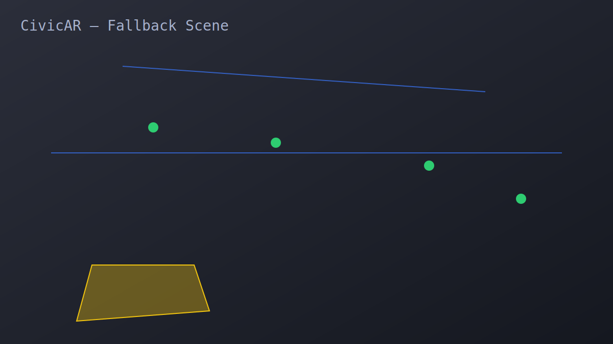

CivicAR
AR View
Dashboard
Create GitHub Repo

Blue: Future pipeline
Yellow: Road widening
Green: Streetlight
Enable Camera
Toggle Overlays
Report Issue
Report an Issue
Photo (simulated):
Issue Type:
Pothole
Garbage
Drain Overflow
Run AI Validation
Submit Ticket
Close
My Tickets